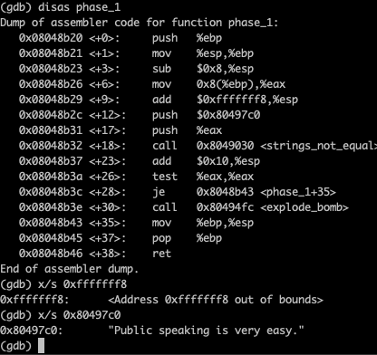

Writeup1
Etape 1 :
Recuperer l'ip de la vm :
faire un arp-scan puis regarder celle qui a pcs systemtechnik gmbh (ici : 192.168.1.50)
Etape 2 :
regarder la ports ouverts
pour cela on fait un nmap

Etape 3 :
Regarder ce que l'on peut tirer du site web
utiliser dirbuster sous kali linux avec la list medium
Etape 4 :
Regarder sur le forum le probleme login
on peut voir un mot de passe et on "predit" le login et on se connecte
on recupere le mail de la personne


Etape 5 :
aller sur webmail
on met l'adresse de la personne et le mot de passe precedement utilise
on voit ces mails

Etape 6 :
on ouvre le mail
on recupere le user et le mdp
on se connecte a phpmyadmin
Etape 7 :
on est connecter
on teste une injection sql


Etape 8 :
on teste differentes injections php dans phpmyadmin
on fini par trouver un utilisateur et un mot de passe (utilisateur php www-data:www-data)

Etape 9 :
on esseye de se connecter en ssh avec cet utilisateur et le mot de passe
comme cela ne fonctionn e pas on teste en ftp
on arrive a se connecter
Etape 10 :
on lit le fichier readme
on recuperer le fichier fun
si on cat le fichier on peut voir que cest une archive tar
on renome fun en fun.tar puis on extrait les fichiers

Etape 11 :
on creer un script php pour lire les fichiers
on peut voir une fonction interessante
avec le script on peut voir le retour de chaues fonctions
on en deduit le mot de passe
on convertit le mot de passe en sha256
Etape 12 :
on se connecte en ssh
Etape 13 :
on peut voir un readme et un executable bomb
Etape 14 :
on execute gdb pour chercher les reponses
on trouve la premiere dans phase_1
